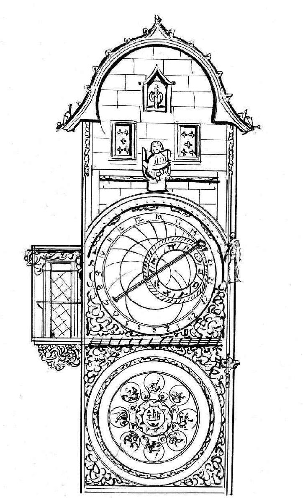

14世纪，大型时钟的建造已遍布整个欧洲，教堂是主要的发起者和维护者。虽然存在误差，这些时钟需要不断地维护和重置，但这已经是计时史上一个了不起的进步。
在14世纪出现的众多时钟杰作中，英格兰圣奥尔本斯修道院院长理查德·沃林福德（Richard of Wallingford）及帕多瓦的乔凡尼·德·东迪（Giovanni de Dondi）制造的天文钟是最具代表性的两件。尽管这两座时钟目前都已不在，但根据详细记载，两座时钟都具有多种功能。沃林福德的时钟有一个很大且带有星盘 [1] 的钟表盘，还有一个可显示伦敦桥潮汐水位的指示器。该时钟每小时都会鸣钟报时，时钟敲击几下就代表几点钟。帕多瓦时钟的表盘上可以显示精确至分的时间、行星运动、节日日历，甚至还能预测日食和月食。
早期另一个虽已消失但据说也极其壮观的时钟位于斯特拉斯堡大教堂。这个时钟最令人称奇的地方是有一只镀金的公鸡（代表耶稣），正午时分它会扇动自己的机械翅膀鸣钟报时，三位机械式东方贤士 [2] 会向其鞠躬行礼。并且，这个时钟还有一个星盘和日历。14世纪，其他具代表性的时钟包括英国威尔斯大教堂时钟（目前存放于伦敦科学博物馆，仍在运行）、鲁昂大时钟和巴黎海因里希·冯·维克（Heinrich von Wick）建造的钟。
至今仍在运行且每日吸引众多游人前来欣赏的是布拉格旧城广场上的天文钟。它建于1410年，外观精美，集机械钟、天文表盘及黄道十二宫图为一体，还有许多活动雕像会在整点报时并表演。这些雕像分别代表“虚荣”“贪婪”“死亡”和“土耳其异教徒”（代表享乐和欲望）。天文钟表盘上方的两个小窗每到整点时刻，十二尊耶稣门徒雕像将依次现身，简直就是一场精彩绝伦的演出！600多年间，这座天文钟经历了很多次整修和扩建，第二次世界大战（下文简称“二战”）期间还曾遭到德国军队的严重毁坏。

布拉格天文钟
“时钟”的命名
14世纪晚期，英语中开始使用“钟表”（clock）一词，取代了之前的拉丁语“计时”（horologium）（但钟表制造“horology”仍沿袭使用，有计时装置的意思）。名字变更最直接的原因跟时钟最初的使用关系密切，时钟主要是教堂用来召集大家集会做祷告的。“clock”一词来自早期一个表示“钟声”的词。这个词可能属于凯尔特语（clocca或clagan，表示“钟”），最后进入中世纪的拉丁语、古法语（cloque）和中古荷兰语（clocke），但所指的含义都一样，据说是爱尔兰传教士将这个词传播到欧洲各地的。现在爱尔兰语中的clog一词既指钟声，又指钟表。